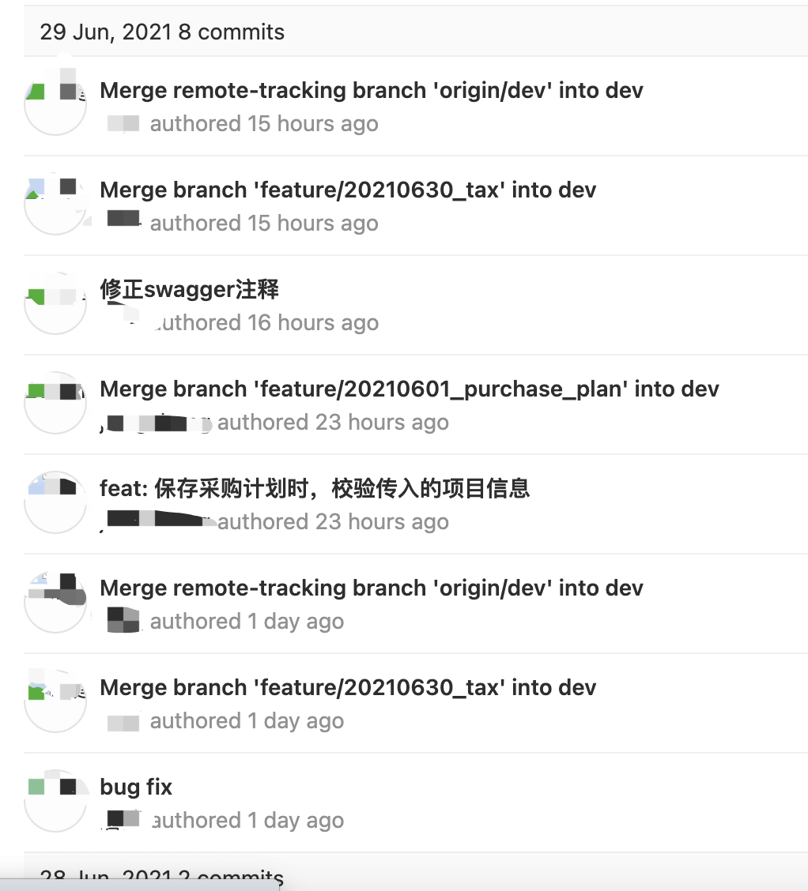

更优雅地使用 Git
一个小问题的思考
日常的开发和测试工作中，你是否有以下烦恼?
- 分支生命周期过长，协作开发困难
- 不敢轻易改动他人的代码，不敢重构
- 为杂乱无序的提交记录费神，疲于解决提交冲突
- 不同环境测试的代码具有不确定性
- 为了保证合并代码不出错，反复进行回归测试
Git为开发和测试提供了一个高效的工具，但往往我们在使用的过程中没有发挥出他最大的潜力，甚至因为使用不当，人为造成不必要的问题。
我们的开发流程是比较标准传统的 GitFlow 分支开发流程：
- 研发基于不同的特性拉取不同的
feature分支进行代码开发 - 开发完成之后，合并到
dev分支，在开发环境完成联调和自测 - 自测完成，合并代码到
qa分支，由测试开始执行测试用例 - 测试通过，合并代码到
release分支并发布到预发布环境，由测试利用线上数据进行回归测试 - 回归完成，合并代码到
master分支并发布到生产环境，由测试和产品回归和验收产品功能
整个流程涉及4次必要的代码合并和2次必要的回归测试流程。这种情况下，即使回归测试已经比较全面了，是否能保证上线的代码足够可靠呢？
近期我们团队在发布的时候发生了两个小插曲：
- 合并代码到
master分支，没有任何冲突，但发布上线后发现代码错误 - 合并代码到
master分支的过程中，对冲突不够熟悉，选择了错误的代码
这些问题可以通过分支管理规避吗？请往后看。
杂乱无序的提交记录
Git为开发和测试提供了方便且优雅的版本管理工具，但不同的人有不同的使用习惯，因此会产生不同的问题。
还是以上一节提到的合并小插曲为例，在我们发现 master 分支的代码不是我们想要的代码后，我们选择了如下处理方式：
- 使用
master分支和正确代码分支做对比 - 利用对比工具，将正确代码分支上，我们认为正确的代码选择到
master分支上，形成一次新的提交
这确实是一种解决冲突的方式，在开发流程中的一些场景下会有不错的效果（比如两个同时开发的分支 feature1 和 feature2 ，双方有一部分共用代码，但又不想合并开发，这时可以选择上述方式拣取需要的代码部分）。但在进入测试和发布流程后，这种处理方式就欠妥了。
这样的方式会导致以下问题:
- 拣取过来的部分代码形成了新的提交，这个提交与原有代码没有任何逻辑上的关系。当我们需要再次合并原提交所在分支时，这次拣取所遇到的冲突，下一次合并还会遇到
- 原代码分支是经过测试和回归的，但通过对比拣取的方式选取代码到新的分支上，这个过程会导致代码变更，意味着对比拣取后的代码，需要重新进行回归测试
如果代码提交记录是下面这样，测试会不会觉得头大崩溃？


{kind=link}
{kind=link}
9个提交记录里面只有2个提交描述是有用信息，其它的要么是因为合并冲突而生成的无意义提交，要么是没有是指信息的提交描述。如果一个开发或者测试想根据提交信息追本溯源，面对这样的提交信息他该怎么办？
造成上图问题的主要原因有三个:
- 不当的Git使用方式，打乱了提交间的逻辑关系
- 提交信息填写过于随意，没有描述清楚代码变更的作用，也无法对应上日常工作的内容
- 不当的分支管理导致了不必要的冲突
那么如何解决这几个问题呢？
更优雅地合并
"Git’s philosophy is to be smart about determining when a merge resolution is unambiguous, but if there is a conflict, it does not try to be clever about automatically resolving it. "
Git是什么我想大家都清楚，常见功能也都很熟练，我就不过多介绍了。这一节我们主要集中在冲突这个概念上，因此我们不得不先复习一下Git的合并流程。
合并操作有多种策略，默认策略是resursive，递归三路合并:
- 从两个待合并的提交 head1、head2 上，寻找最近的公共祖先 ancestor
- 如果存在两个公共祖先，以两个公共祖先为基础执行步骤1 （递归）
- 如果 head2 的祖先是 head1 本身，执行 Fast-Forward 策略，直接改变 head1 指向 head2，合并完成
- 进行对比 head1 diff ancestor = diff1， head2 diff ancestor = diff2，根据 diff1 diff2 判断是否冲突
- 如果存在冲突，中断，等待解决冲突
- 形成新的提交（即自动形成的 " Merge head2 into head1 "），head1 指向新的提交
从这里，我们发现了前文提到的杂乱且无实际意义的提交记录是怎么来的。 如何避免这些记录呢？答案也在合并策略中。
第三点我们提到，如果待合并的目标提交的祖先就是当前提交，会触发 Fast-Forward 策略，只是改变当前 head 指向，不需要形成新的提交来记录这次合并行为。
要做到这一点，我们需要借助三个常用的命令， git rebase 、 git cherry-pick 和 git stash。什么情况下使用它们呢？
- 执行
git merge之前，先执行git rebase，确保被合并的分支的祖先是当前分支head - 不要直接执行
git pull，在本地有和远端分支不同的提交记录的情况下，执行git pull --rebase，保证本地提交的祖先节点是远端分支的提交 - 不想合并分支，只需要其它分支的某一个提交时，使用
git cherry-pick，效果和使用对比工具拣取需要的代码差不多，但会获取整个提交 - 如果本地同分支有变更尚未形成提交，但又需要同步远端代码，可以使用
git stash将变更暂存起来，执行完git pull之后，再执行git stash --pop释放暂存区变更
以上几个命令使用起来并不复杂，但却带来了以下好处:
- 大幅减少合并过程中的冲突，如果我们使用
gitlab的MergeRequest进行合并，rebase操作几乎是必须的 - 使提交间的逻辑关系更加清晰，有助于研发和测试追溯变更，同时也能减少后续提交发生冲突的概率
rebase在提交次数较多且差异较大的情况下，并不友好，可能出现多次解决冲突的问题。这种情况有两种解决方案:
- 在被中断时，使用
git rebase --skip继续，到最后一次提交的时候一起解决冲突 - 直接使用
git merge，一次性解决冲突，形成一次新的提交 上述情况在代码同步频率得当的情况下很少发生
更优雅地提交
前一节的两个命令解决了不规范合并的问题，还有一个问题是如何让提交信息更有价值？ 如何定义一个提交信息是否有价值呢？通过经验，我们认为有价值的描述具备以下几点特性:
- 阐述清楚变更的作用（必备）
- 简单描述程序实现思路（推荐）
- 提醒需要特别注意的地方（推荐）
- 包含需求来源（强烈推荐）
首先是变更的目的或者说作用，我们推荐使用以下几个词来表述常见场景的变更:
feat:feature，特性，提交是为了完成某个需求或功能，强烈建议附加实现方案描述和需求来源链接，通常对应一个开发任务fix: 修复，提交是为了修复某个已提测的问题，通常关联一个提测后的BUG单hotfix: 热修复，指提交是为了修复某个线上问题，需要快速发布，通常关联一个线上BUG单refactor: 重构，提交是进行代码结构或设计的重构，通常需要回归测试chore: 杂项，提交完成一些日志、注释、文档编写，或是构建工具等变动，通常不需要回归测试test: 测试，单元测试、集成测试编写，通常不需要回归测试
示例:
feat: 添加《Use Git Elegantly》博文
说明:
1.从《Practice Agile with TBD》中拆分冗余博文内容
2.增加git实现原理部分章节
链接: https://www.tapd.cn/123/prong/tasks/456
为了强化团队协作的一致性，在大家都达成共识后，我们可以基于githook对提交信息进行验证，甚至将提交与具体的任务进行关联等。 如何使用githook，有机会我们单独讨论一下，这里不做过多说明。
使用githook验证提交信息
To Be Done